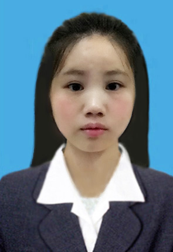

- 杨步鸿——求职意向:web前端开发
- 岗位:web前端开发/软件开发助理
- 工作性质:全职
- 目前状况:应届毕业生

-
- 项目经验:
2016.9-2016.10 单机版超市管理系统设计
在vc++6.0的软件环境下，用c++开发一个超市管理系统，主要功能有用户登录，用户管理，商品管理，供应商管理，以及销售管理，这些都需要建立数据库来完成。
2016.9-2016.10 贪吃蛇游戏开发
用C语言开发一款贪吃蛇游戏，实现整个游戏的开发以及修复漏洞。
-
- 教育经历:
2013.9—2017.6
湖北民族学院
电子信息科学与技术（本科）
我所在专业发展规划方向主要是通信方向和物联网方向，在校主修了模拟电路、数字电路、电路分析、C语
言、单片机及ARM嵌入式。有扎实的基础电路功底，熟悉51及STM32单片机编程。熟悉单片机基本电路及常用外围电路搭建，辅修web前端设计；常用编
程软件keil、vc++6.0，notepad++；常用设计软件photoshop；常用电路仿真软件：protues、Multisim；常用原理
图画图软件：protel 99se、Altium designer。
-
- 实践经验:
2016 /9—2016 /10 光庭导航科技有限公司实训
基于C语言、C++的贪吃蛇设计，超市管理系统的设计等。
2014 /6—2016.6 单片机课程设计
基于51单片机的实时时钟设计，温湿度采集系统设计，简易波形发生器设计，数字频率计等基于STM32的直流稳压电源设计。 基于FPGA的点阵LED显示设计，时钟设计。
2015 /3—2016 /6 学校创新中心学习
旋转LED的设计，风力摆的设计等
2016/6—至今 兄弟连云课堂学习
学习CSS3、HTML5、div+css、JavaScript等
2015/10—2016/5 实践奖励
全国大学生电子设计大赛（参赛奖）、学校电子设计大赛（一等奖）、学校程序设计大赛（参赛奖）、电子创意设计（三等奖）
-
- 等级证书:
全国计算机等级证书（二级）
大学英语 (四级)
全国普通话等级证书 （二乙）
-
- 自我评价：
也许我的理论知识不是特别突出，但是在学校的创新中心学习期间，实践动手操作能力得到很好的锻炼，经过大学的学习，我找到适合自己的方向，专业对口也许并
不是那么重要，重要的是自己的兴趣，以及学习新事物的能力，和解决问题的方法。同时，我也知道很多事情不能一个人完成，我需要向同学老师请教，查资料等。
学习前端设计，虽然是后来才接触，但是我相信自己能够继续坚持下去，做好这个事情，愿意吃苦是很重要的，因为我知道每个岗位都有它本身的难处。